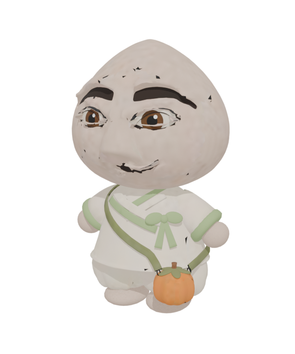
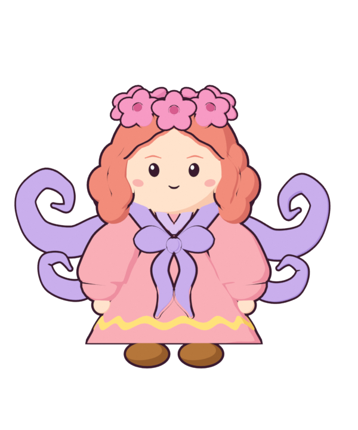
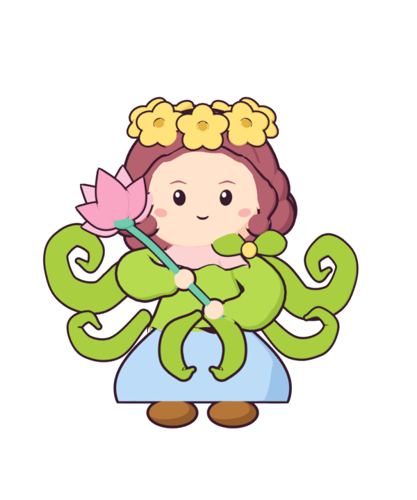
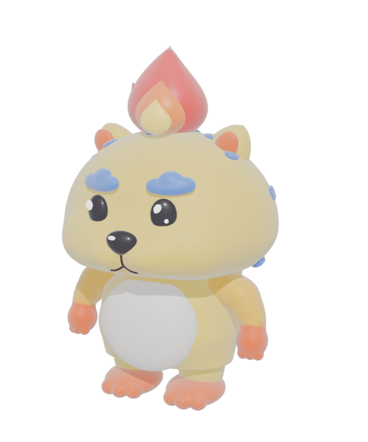
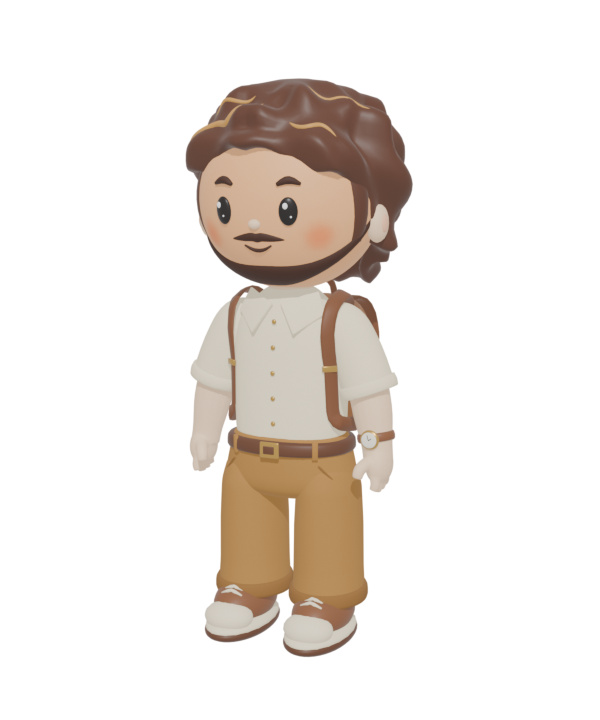

박물관 앞마당의 작은 논 ‘모모’를 걸어 다니는 3D 공간입니다. 다섯 캐릭터 중 하나로 들어가 계절을 바꾸고, 동물 친구들을 만나고, 전통놀이와 계절 놀이를 함께 즐길 수 있어요. 이 안내서에는 캐릭터, 조작, 놀이, 동물 친구들의 성격까지 모두 담았습니다.
01시작하기
처음 열면 들어가기 창이 나옵니다. 이름과 캐릭터를 고르고 들어가기를 누르면 논두렁 앞에서 시작해요.
이름 정하기
직접 적기: 12자까지 적을 수 있어요. 비워 두면 ‘손님’이 됩니다.
🎲 랜덤 유물 이름: 빗살무늬토기, 백자달항아리, 반달돌칼, 측우기, 가락바퀴, 꽃신 등 유물 이름 50개 중 하나가 나와요. 옆의 🎲를 누르면 다시 뽑아요.
이름과 캐릭터는 다음에 들어올 때를 위해 기억해 둬요.
화면 구성
왼쪽 위: 지금 계절 설명과 온라인 관람 링크. 휴대폰에서는 ▾/▴ 버튼으로 접고 펼쳐요(처음엔 접혀 있음).
오른쪽 위: 지금 함께 있는 사람 목록(▾/▴로 접고 펼쳐요, 휴대폰은 처음엔 접힘), 그 아래 📖 안내서와 🗺️ 지도 아이콘. 지도는 화면 가운데 크게 열리고, 위쪽이 박물관이에요. 나는 빨간 화살표, 다른 사람은 옷 색 점, 동물 친구는 흰 점이에요. 바깥을 누르거나 ✕, Esc로 닫아요.
아래: 계절 버튼(봄·여름·가을·겨울), 말하기 칸, 동작 버튼줄. 버튼은 둥글고 반투명해서 장면이 비쳐 보여요.
02조작법
컴퓨터는 키보드와 마우스, 휴대폰은 조이스틱과 버튼으로 움직여요. 버튼에는 괄호 안에 단축키가 적혀 있어요(휴대폰에서는 숨김).
하고 싶은 것
컴퓨터
휴대폰
걷기
WASD 또는 방향키
왼쪽 아래 조이스틱
달리기
Shift를 누른 채 걷기
조이스틱을 바깥 테두리까지 밀기(가운데가 금색으로 바뀜)
둘러보기 · 확대
화면 끌기 · 마우스 휠
화면 끌기
👋 손 흔들기
F
👋 버튼
🪑 앉기 · 🦆 오리 타기
G
의자 근처에서 나타나는 버튼
🎯 전통놀이 · ⛄ 눈 굴리기 · 🌾 벼 베기 · 입구 열기
E
근처에서 나타나는 버튼
💬 말하기
Enter로 칸 열고 입력 후 Enter
말하기 칸에 입력 후 💬
캐릭터 특기(비파·연꽃·사진·불 뿜기·유령 쫓기)
C
특기 버튼
🕊️ 날기(천인만)
Space
🕊️ 버튼
🔊 소리 켜고 끄기
M
🔊 버튼
🗺️ 지도 크게 보기 · 닫기
N · Esc
오른쪽 위 🗺️ 아이콘
📖 안내서 보기
오른쪽 위 📖 아이콘
오른쪽 위 📖 아이콘
03내 캐릭터 5종
들어갈 때 고르는 캐릭터입니다. 걸음걸이, 특기, 앉는 자세, 표정이 저마다 달라요.

석장승
돌 장승
감 주머니를 멘 돌 장승. 무게감 있는 뒤뚱 걸음이라 발소리도 가장 묵직하게 “쿵” 울려요.
특기 C
👻 유령 쫓기: “유령이다!” 외치면 눈앞에 하얀 유령이 나타나요. 팔을 번쩍 들어 세 번 내리치면 유령이 작아지며 사라지고 “물러가라!” 해요.
표정
손을 흔들거나 말하면 웃고, 물 댄 논에 들어가면 깜짝 놀라요.
앉기
발을 앞으로 살짝 내밀고 앉아요. 굴렁쇠를 굴릴 때는 한 팔을 내밀어 굴렁대를 꽉 잡아요.

새벽
주악천인
꽃관을 쓰고 비파를 타는 천인. 옷자락과 천이 바람에 살랑여요.
특기 C · 날기 Space
🎵 비파 타기: 멈춰 서서 비파를 연주해요. 하늘로 떠올라 날 수 있어요.
표정
연주할 땐 노래하는 얼굴, 말할 땐 신난 얼굴, 입구 앞에선 궁금한 얼굴, 9초 넘게 가만히 있으면 생각하는 얼굴, 논물에 들어가면 놀란 얼굴.

해오름
연화천인
연꽃을 든 천인. 새벽과 같은 천인 계열로, 하늘을 날 수 있어요.
특기 C · 날기 Space
🪷 연꽃 들기: 연꽃을 높이 들고 꽃을 바라보다가 머리 위에 “!!”가 톡 떠요. 이어서 “샤랄라~” 맑은 소리와 반짝이를 흩뿌리며 한 바퀴 빙그르르 돌아요.
표정
연꽃을 들면 감탄, 말할 땐 활짝 웃음, 입구 앞에선 반한 얼굴, 오래 서 있으면 집중한 얼굴, 논물에선 감탄한 얼굴.

해태
불꽃 해태
머리에 불꽃이 이는 해태. 걸을 땐 두 발, 달릴 땐 네 발로 바꿔 힘차게 뛰어요. 불꽃에서 불티가 튀어요.
특기 C
🔥 불 뿜기: 고개를 살짝 들고 입에서 불길을 화르르 뿜어요. 다시 누르거나 움직이면 멈춰요.
앉기
엉덩이를 대고 다리를 앞으로 쭉 뻗어 앉아요.
굴렁쇠 · 낫
앞발을 곧게 뻗어 굴렁대와 낫을 꼭 쥐어요.

Hidden
고고학자
과거의 흔적 속에서 잊힌 이야기를 찾고 기록하는, 책을 좋아하는 감성적인 고고학자. 배낭을 메고, 손목시계를 찬 왼팔로 손을 흔들어요.
특기 C
📷 사진 찍기: 카메라를 눈앞에 들고 잠시 겨눈 뒤 “찰칵”, 플래시가 터져요.
절하기
소원을 빌 때 다리는 곧게 두고 허리를 숙여 절해요.
04모두의 공통 동작
어떤 캐릭터로 들어와도 할 수 있는 것들이에요.
💬 말풍선
60자까지 말할 수 있어요. 7초 동안 머리 위에 둥근 말풍선으로 뜨고, 아래쪽 기록에도 남아요.
👋 손 흔들기
2.4초 동안 손을 흔들어요. 다른 사람 화면에도 보여요.
🪑 앉기
벤치, 파라솔 아래 큰 네모 좌대(한 좌대에 4명), 분수 가장자리에 앉을 수 있어요.
걸어온 방향에서 몸을 돌려 앉고, 카메라가 천천히 얼굴 쪽으로 돌아요.
움직이면 일어나요. 다른 사람이 앉은 자리는 비워 둬요.
🙏 소원 빌기
소원수 가까이 가면 🙏 버튼이 나타나요. 소원을 적고 리본 색(빨강·노랑·파랑·흰색·검정)을 고르세요.
절을 하면 리본이 손에서 날아가 나뭇가지에 매듭지어져요.
적은 글은 어디에도 저장·전송되지 않아요. 아무도 볼 수 없고, 리본 색과 자리만 남아요.
🌸 계절 바꾸기
봄 · 모내기 5월 말: 물 댄 논에 어린 모. 바람이 잦아들면 박물관과 하늘이 논물에 비쳐요.
여름 · 한여름 8월: 허리춤까지 자란 벼, 논두렁의 백로.
가을 · 황금 들판 10월: 고개 숙인 이삭, 붉게 익은 감.
겨울 · 겨울 논 1월: 그루터기와 볏가리, 내리는 눈.
계절은 내 화면에서만 바뀌고 다음에 들어와도 기억해요.
🔊 소리
발소리는 땅에 따라 달라요: 풀(사박), 돌길(저벅), 흙(자박), 나무 데크(통통), 진흙(질척), 물(찰박), 눈(뽀드득).
캐릭터마다 발소리 무게가 달라요. 석장승은 묵직하고, 천인은 가볍게 들려요.
바람 소리와 새소리가 은은하게 깔려요.
🚪 입구
박물관 입구와 농경문화관 입구 앞에 서면 온라인 관람 사이트로 가는 버튼이 떠요. E를 눌러도 새 탭에서 열려요.
05놀이
근처에 가면 버튼이 바뀌어 나타나요. 컴퓨터에서는 E 하나로 모두 할 수 있어요.
🎯 투호
항아리 3개가 앞뒤로 한 줄로 서 있어요. 가장 가까운 항아리에 화살을 던져요. 가까이 설수록 잘 들어가고, “들어갔다! 🎉 (2/5)”처럼 성공 횟수가 떠요. 들어간 화살은 항아리에 꽂혀 남아요.
🎲 윷놀이
큰 멍석 위로 윷가락 네 개가 빙글빙글 날아올라요. 납작한 면이 위로 온 개수로 도·개·걸·윷·모가 정해져요. X 표시가 있는 가락 하나만 엎어지면 빽도예요.
⭕ 굴렁쇠
윷 멍석 앞 걸이 두 개에 굴렁쇠가 4개 있어요. 집으면 앞에서 굴러가며 따라오고, 한 손은 굴렁대를 잡은 채 고정돼요. 앉거나 날면 저절로 내려놓아요.
⛄ 눈 굴리기 겨울
어디서든 눈덩이를 만들어 굴려요. 걸을수록 커져 지름 1.4 m까지 자라요. 내려놓은 눈덩이 바로 앞에 더 작은 눈덩이를 놓으면 위에 얹혀요. 2개면 2단, 3개면 3단 눈사람이 돼요. 맨 위엔 숯 눈과 당근 코, 그 아래엔 나뭇가지 팔이 생겨요. 한 사람이 12개까지 남길 수 있어요.
🌾 벼 베기 가을
논 근처에서 낫을 들고 논을 걸으면 팔을 휘둘러 앞의 벼를 베어요. 벤 자리엔 그루터기만 남고, 2 m쯤마다 볏단이 하나씩 세워져요(최대 16개).
🦆 분수 앉기 · 타기
분수 정면(큰 오리가 바라보는 쪽)에서는 가운데 큰 오리모양 토기 등에 올라타요(한 번에 한 명). 왼쪽·오른쪽·뒤쪽에서는 분수 가장자리에 걸터앉아요(12자리).
06동물 친구 8마리
앞마당과 광장을 돌아다니는 동물들이에요. 가까이 가면 이름표가 보이고, 1.8 m 안으로 다가가면 한마디씩 해요(같은 동물은 25초에 한 번).
공통: 쉬기·걷기·특기를 무작위로 번갈아 하고, 가끔 그 자리에서 25–50초쯤 잠들어요. 잠들면 네 발 동물은 엎드려 턱을 괴고, 두 발 동물은 앉아서 꾸벅 졸아요. 눈을 감고 숨 쉬듯 오르내리며 머리 위로 Z z z가 떠올라요. 자는 동물에게 다가가면 “쿨쿨…”, “음냐… 5분만 더…”, “Zzz…”, “…새근새근…” 같은 잠꼬대를 해요. 논에는 들어가지 않고, 쉬는 동물은 다가온 사람을 바라봐요.
07장소 안내
장소
있는 것
꼬마논 모모
계절에 따라 모, 벼, 황금 이삭, 그루터기로 바뀌는 논. 사람이 지나가면 벼가 갈라지고 논물에 물결이 일어요. 허수아비(긴소매, 밀짚모자, 귤색 목도리)가 지켜요.
농경문화관
입체 글자 간판, 앞마당의 놀이 실루엣, 맷돌, 솟대. 입구에서 온라인 관람으로 갈 수 있어요.
박물관 본관
아치 배너, 루버 날개 벽의 전시·세미나 포스터, 입구 옆 깃발 3개(태극기 · 그림 깃발 · 남밍 사인). 깃발은 바람에 살랑여요.